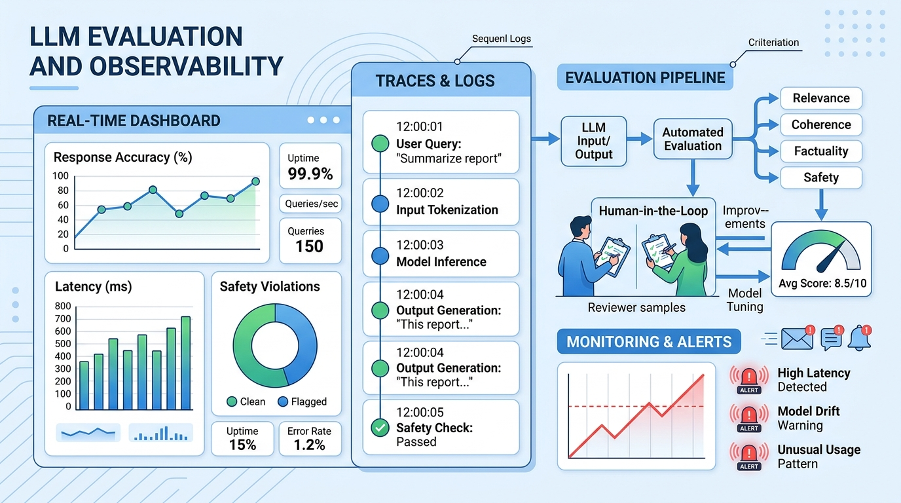

"Without data, you're just another person with an opinion. Without evaluation, you're just another model with a prediction."
Eval AI Agent

Chapter Overview
Building LLM applications is only half the challenge; knowing whether they actually work is the other half. Unlike traditional software where correctness is binary, LLM outputs are probabilistic, subjective, and context-dependent. A model that performs brilliantly on one prompt may fail catastrophically on a slight rephrasing. This fundamental uncertainty makes rigorous evaluation, principled experiment design, and continuous observability essential for every LLM project.
This chapter covers the complete evaluation and monitoring lifecycle. It begins with core evaluation metrics (perplexity, BLEU, ROUGE, BERTScore, LLM-as-Judge) and standard benchmarks (MMLU, HumanEval, MT-Bench, Chatbot Arena). It then addresses experimental design with statistical rigor, including bootstrap confidence intervals, paired tests, and ablation studies. Specialized evaluation for RAG and agent systems follows, covering RAGAS metrics, trajectory evaluation, and frameworks like DeepEval and Phoenix.
The chapter also covers testing strategies for LLM applications (unit tests, red teaming, prompt injection testing, CI/CD integration), production observability with tracing tools (LangSmith, Langfuse, Phoenix), monitoring for prompt drift, provider version drift, and embedding drift, and reproducibility practices including prompt versioning, config management with Hydra, experiment tracking with MLflow and Weights & Biases, and containerized reproducibility with Docker.
You cannot improve what you cannot measure. This chapter covers LLM evaluation methods including automated metrics, human evaluation, and LLM-as-judge approaches. The evaluation frameworks here apply to every system built in this book, from simple API calls to complex multi-agent pipelines.
Prerequisites
- Chapter 10: LLM APIs (chat completions, message formatting, model parameters)
- Chapter 11: Prompt Engineering (prompt design, structured outputs, chain-of-thought)
- Chapter 20: Retrieval-Augmented Generation (embedding search, vector stores, RAG pipelines)
- Chapter 22: AI Agents (agent architectures, tool use, planning patterns)
- Familiarity with Python testing frameworks (pytest) and basic statistics
Learning Objectives
- Select and compute appropriate evaluation metrics for different LLM tasks (generation, retrieval, reasoning, code)
- Design statistically rigorous experiments with bootstrap confidence intervals, paired tests, and proper ablation controls
- Evaluate RAG pipelines using RAGAS metrics and agent systems using trajectory-based evaluation
- Build automated test suites for LLM applications including unit tests, integration tests, and red-team adversarial tests
- Instrument LLM applications with distributed tracing using LangSmith, Langfuse, or Phoenix
- Detect and respond to prompt drift, model version drift, and embedding drift in production systems
- Implement reproducibility practices including prompt versioning, config management, and experiment tracking
- Integrate evaluation into CI/CD pipelines using assertion-based testing and promptfoo
- Design quality monitoring dashboards with alerting for production LLM applications
Sections
- 29.1 LLM Evaluation Fundamentals Perplexity, bits-per-byte, BLEU, ROUGE, BERTScore, LLM-as-Judge, human evaluation protocols, and standard benchmarks (MMLU, HumanEval, MT-Bench, Chatbot Arena).
- 29.2 Experimental Design & Statistical Rigor Bootstrap confidence intervals, paired statistical tests, effect sizes, seed management, ablation study design, and benchmark contamination detection.
- 29.3 RAG & Agent Evaluation RAGAS metrics (faithfulness, answer relevancy, context precision/recall), agent task completion, trajectory evaluation, and frameworks (DeepEval, Ragas, Phoenix).
- 29.4 Testing LLM Applications Unit testing with mocks, integration testing, red teaming, prompt injection testing, CI/CD integration, assertion-based evaluation, and promptfoo.
- 29.5 Observability & Tracing LLM tracing concepts, LangSmith, Langfuse, Phoenix, structured logging patterns, and production alerting for LLM applications.
- 29.6 Evaluation-Driven Quality Gates Automated deployment gates, regression testing for prompt changes, golden test sets, continuous evaluation pipelines, and CI/CD integration.
- 29.7 LLM Experiment Reproducibility Reproducibility challenges, versioning strategies, config management with Hydra, experiment tracking with MLflow and W&B, and containerized reproducibility.
- 29.8 Arena-Style and Crowdsourced Evaluation Chatbot Arena and Elo-based model ranking, crowdsourced human evaluation, pairwise comparison methodologies, and community-driven benchmarking.
- 29.9 Evaluation Harness Ecosystems lm-evaluation-harness, EleutherAI benchmarks, HELM, BigBench, and reproducible evaluation pipelines for systematic model comparison.
- 29.10 LLM-as-Judge: Reliability, Debiasing, and Training Judge Models Position bias, verbosity bias, self-enhancement bias, calibration methods, Prometheus, JudgeLM, and building reliable automated evaluation pipelines.
- 29.11 Long-Context Benchmarks and Context Extension Methods Needle-in-a-haystack, RULER, LongBench, context window scaling, RoPE extensions, and evaluating long-context retrieval fidelity.
- 29.12 Human Feedback Tooling Label Studio, Argilla, and LangSmith for collecting human feedback, annotation workflows, and preference data for alignment.
- 29.13 Research Methodology for LLM Papers Reading and evaluating LLM research papers, benchmark contamination, reproducibility standards, and research methodology best practices.
- 29.14 LLM Performance Benchmarking and Cross-Hardware Portability MLPerf training and inference suites, TTFT/TPOT/throughput benchmarking, TPU/JAX/MaxText, AMD ROCm, Intel Gaudi portability, Sarathi-Serve chunked prefill, Llumnix cross-instance scheduling, KV cache compression and tiered storage.
What's Next?
In the next chapter, Chapter 30: Observability and Monitoring, we cover the logging, tracing, drift detection, and alerting patterns that keep LLM systems healthy in production.